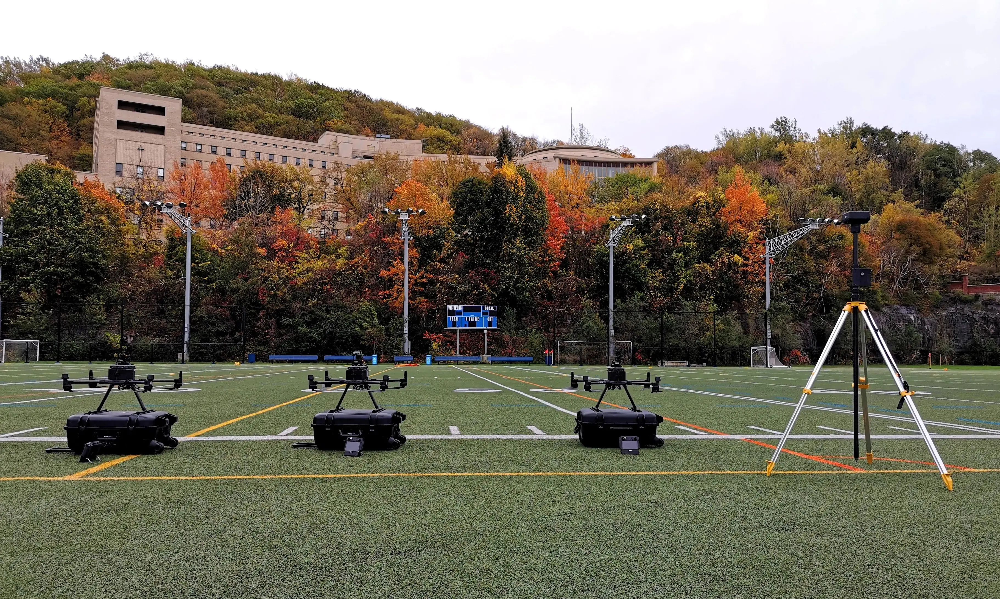
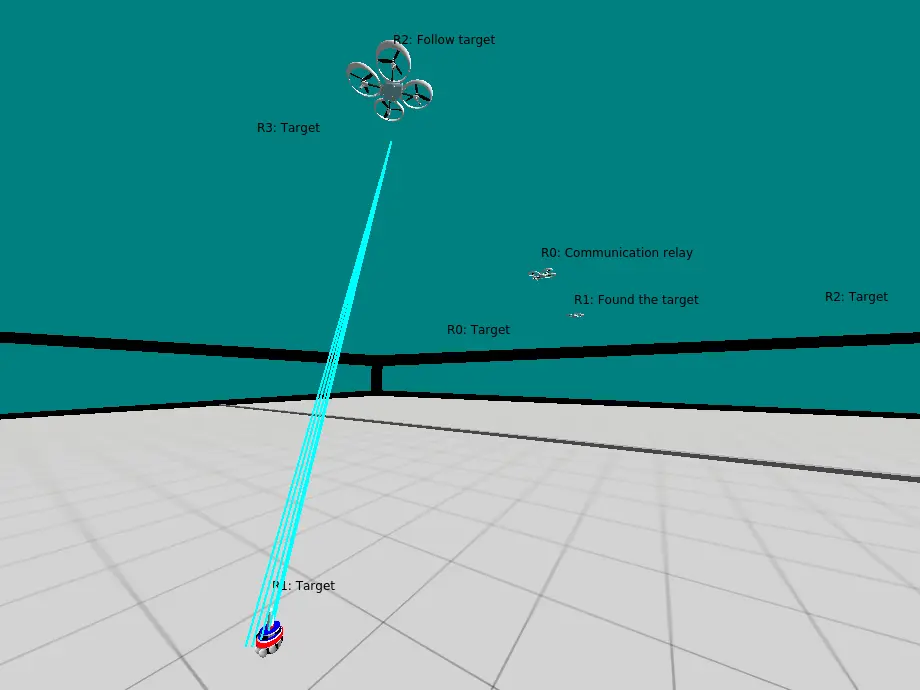
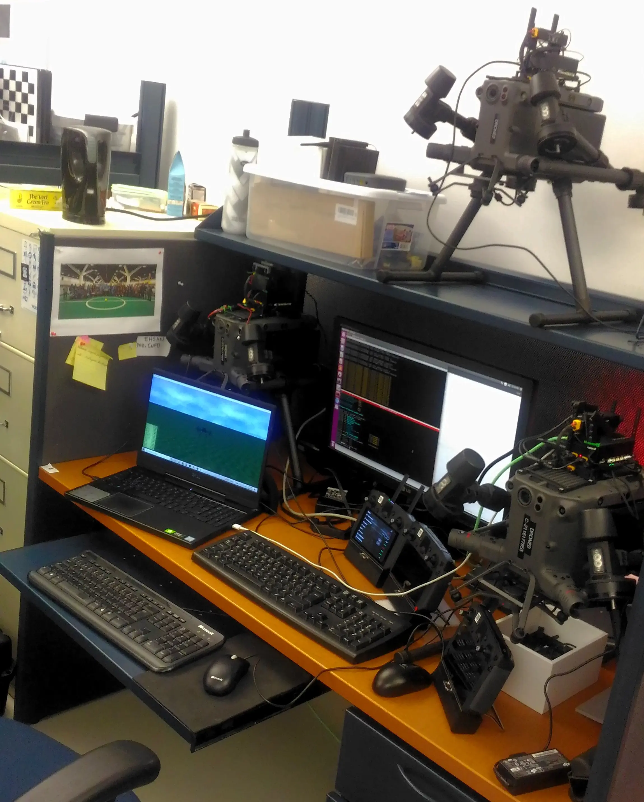
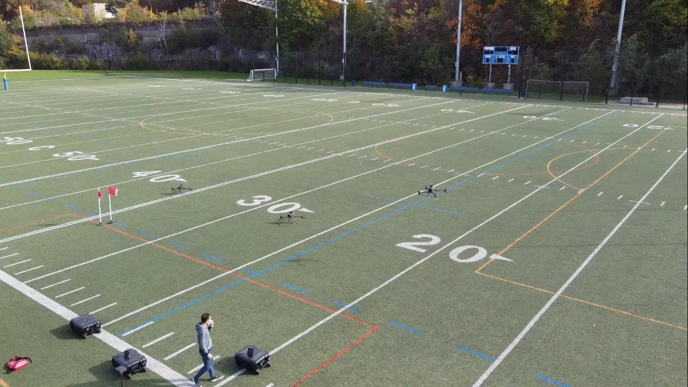

Search and Rescue with Sparsely Connected Swarms
Decentralized search, belief sharing, and communication relay formation for robot swarms with intermittent connectivity.
This research project addressed search and rescue scenarios where robots must spread over large areas while maintaining only sparse and intermittent communication. The system allowed robots to coordinate exploration through a distributed belief map and to form a communication relay after detecting a target.
My contribution was as an equal-contribution researcher on the algorithmic design, simulation validation, and real-world drone experimentation. The work combined swarm intelligence, decentralized decision making, robot networking, simulation, and hardware-in-the-loop testing with aerial robots.
My Contributions
My work focused on research development, simulation, experimental validation, and integration of the swarm coordination approach with real aerial robot platforms.
- Co-developed the decentralized search and rescue approach with equal research contribution.
- Implemented and evaluated distributed belief-map coordination for target search under sparse and intermittent communication.
- Integrated swarm behaviors using Buzz and ROSBuzz within a ROS-based robotic workflow.
- Developed ARGoS simulation scenarios for multi-robot search, information sharing, and relay formation.
- Implemented hardware-in-the-loop validation using DJI Matrice 300 RTK drones and DJI Manifold 2 onboard computers.
- Conducted real-world flight experiments with three autonomous drones at the CEPSUM soccer field.
- Analyzed system behavior across simulation and outdoor experiments, including search coordination, belief sharing, communication behavior, and relay formation.
System Architecture
The system used a decentralized role-based swarm architecture. Each drone ran the same behavior logic and changed role depending on target discovery, rendezvous updates, relay requirements, and communication state.
Swarm Coordination Logic
Robots searched independently using a distributed belief map and exchanged updates opportunistically when they came within communication range. Periodic rendezvous checks allowed the swarm to share target information without requiring continuous connectivity.
Relay and Communication Strategy
After a target was found, the swarm assigned robots to networker roles and formed a communication relay from the rendezvous point toward the target location, allowing target information to reach the operator.
Deployment Stack
The implementation combined Buzz, ROSBuzz, ROS, DJI OSDK, DJI Matrice 300 RTK drones, DJI Manifold 2 onboard computers, and a B.A.T.M.A.N. ad-hoc mesh network.
Validation
The work was validated through simulation, hardware-in-the-loop testing, and outdoor experiments with three DJI Matrice 300 RTK drones.
Simulation Evaluation
ARGoS simulations were used to evaluate the decentralized search strategy, distributed belief-map updates, sparse communication behavior, and relay formation across different swarm configurations.
Hardware-in-the-Loop Validation
The swarm logic was validated with DJI Matrice 300 RTK drones and DJI Manifold 2 onboard computers, connecting the Buzz and ROSBuzz behavior layer to realistic aerial robot hardware and communication interfaces.
Outdoor Drone Experiments
Real-world experiments were conducted with three drones at the CEPSUM soccer field to validate the system beyond simulation and demonstrate relay formation with physical UAVs.
Publication and Code
ROSBuzz
ROS package connecting the Buzz Virtual Machine with the ROS ecosystem for mobile robot and swarm robotics experiments.
Technical References
External tools and documentation related to the swarm programming, drone control, and ad-hoc networking components used in this project.
Project Gallery
Selected images and videos from simulation, hardware-in-the-loop validation, and real-world drone experiments. Additional algorithm diagrams, quantitative plots, and experimental details are available in the published article.


